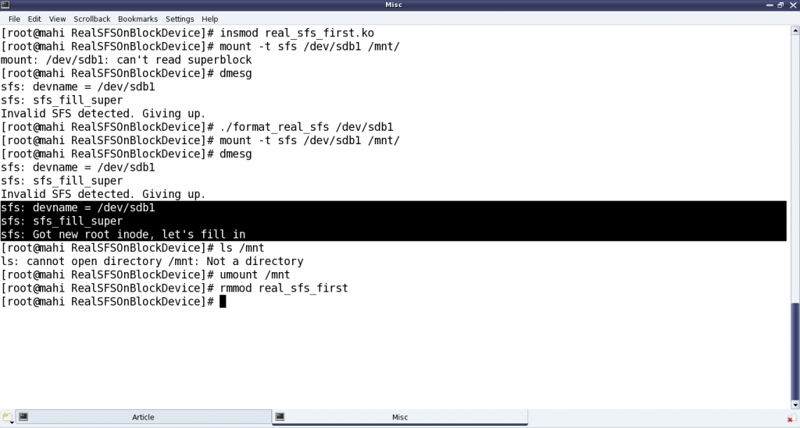

The Semester Project – Part VI: File System on Block Device
This twenty-third article, which is part of the series on Linux device drivers, enhances the previously written bare bone file system module, to connect with a real hardware partition.
Since the last bare bone file system, the first thing which Pugs figured out was how to read from the underlying block device. Following is a typical way of doing it:
struct buffer_head *bh;
bh = sb_bread(sb, block); /* sb is the struct super_block pointer */
// bh->b_data contains the data
// Once done, bh should be released using:
brelse(bh);
To do the above and various other real SFS (Simula File System) operations, Pugs’ felt a need to have his own handle to be a key parameter, which he added as follows (in previous real_sfs_ds.h):
typedef struct sfs_info
{
struct super_block *vfs_sb; /* Super block structure from VFS for this fs */
sfs_super_block_t sb; /* Our fs super block */
byte1_t *used_blocks; /* Used blocks tracker */
} sfs_info_t;
The main idea behind this was to put all required static global variables in a single structure, and point that by the private data pointer of the file system, which is s_fs_info pointer in the struct super_block structure. With that, the key changes in the fill_super_block() (in previous real_sfs_bb.c file) becomes:
- Allocate the structure for the handle, using kzalloc()
- Initialize the structure for the handle (through init_browsing())
- Read the physical super block, verify and translate info from it into the VFS super block (through init_browsing())
- Point it by s_fs_info (through init_browsing())
- Update the VFS super block, accordingly.
Accordingly, the error handling code would need to do the shut_browsing(info) and kfree(info). And, that would additionally also need to go along with the function corresponding to the kill_sb function pointer, defined in the previous real_sfs_bb.c by kill_block_super, called during umount.
Here’s the various code pieces:
#include <linux/slab.h> /* For kzalloc, ... */
...
static int sfs_fill_super(struct super_block *sb, void *data, int silent)
{
sfs_info_t *info;
if (!(info = (sfs_info_t *)(kzalloc(sizeof(sfs_info_t), GFP_KERNEL))))
return -ENOMEM;
info->vfs_sb = sb;
if (init_browsing(info) < 0)
{
kfree(info);
return -EIO;
}
/* Updating the VFS super_block */
sb->s_magic = info->sb.type;
sb->s_blocksize = info->sb.block_size;
sb->s_blocksize_bits = get_bit_pos(info->sb.block_size);
...
}
static void sfs_kill_sb(struct super_block *sb)
{
sfs_info_t *info = (sfs_info_t *)(sb->s_fs_info);
kill_block_super(sb);
if (info)
{
shut_browsing(info);
kfree(info);
}
}
kzalloc() in contrast to kmalloc(), also zeroes out the allocated location. get_bit_pos() is a simple Pugs’ way to compute logarithm base 2, as follows:
static int get_bit_pos(unsigned int val)
{
int i;
for (i = 0; val; i++)
{
val >>= 1;
}
return (i - 1);
}
And init_browsing(), shut_browsing() are basically the transformations of the earlier user-space functions of browse_real_sfs.c into kernel-space code real_sfs_ops.c, prototyped in real_sfs_ops.h. This basically involves the following transformations:
- “int sfs_handle” into “sfs_info_t *info“
lseek()&read()into the read from the block device usingsb_bread()calloc()intovmalloc()& then appropriate initialization by zeros.free()intovfree()
Here’s the transformed init_browsing() and shut_browsing() in real_sfs_ops.c:
#include <linux/fs.h> /* For struct super_block */
#include <linux/errno.h> /* For error codes */
#include <linux/vmalloc.h> /* For vmalloc, ... */
#include "real_sfs_ds.h"
#include "real_sfs_ops.h"
int init_browsing(sfs_info_t *info)
{
byte1_t *used_blocks;
int i, j;
sfs_file_entry_t fe;
int retval;
if ((retval = read_sb_from_real_sfs(info, &info->sb)) < 0)
{
return retval;
}
if (info->sb.type != SIMULA_FS_TYPE)
{
printk(KERN_ERR "Invalid SFS detected. Giving up.\n");
return -EINVAL;
}
/* Mark used blocks */
used_blocks = (byte1_t *)(vmalloc(info->sb.partition_size));
if (!used_blocks)
{
return -ENOMEM;
}
for (i = 0; i < info->sb.data_block_start; i++)
{
used_blocks[i] = 1;
}
for (; i < info->sb.partition_size; i++)
{
used_blocks[i] = 0;
}
for (i = 0; i < info->sb.entry_count; i++)
{
if ((retval = read_from_real_sfs(info,
info->sb.entry_table_block_start,
i * sizeof(sfs_file_entry_t),
&fe, sizeof(sfs_file_entry_t))) < 0)
{
vfree(used_blocks);
return retval;
}
if (!fe.name[0]) continue;
for (j = 0; j < SIMULA_FS_DATA_BLOCK_CNT; j++)
{
if (fe.blocks[j] == 0) break;
used_blocks[fe.blocks[j]] = 1;
}
}
info->used_blocks = used_blocks;
info->vfs_sb->s_fs_info = info;
return 0;
}
void shut_browsing(sfs_info_t *info)
{
if (info->used_blocks)
vfree(info->used_blocks);
}
Similarly, all other functions in browse_real_sfs.c would also have to be transformed, one by one. Also, note the read from the underlying block device is being captured by the two functions, namely read_sb_from_real_sfs() and read_from_real_sfs(), which are coded as follows:
#include <linux/buffer_head.h> /* struct buffer_head, sb_bread, ... */
#include <linux/string.h> /* For memcpy */
#include "real_sfs_ds.h"
static int read_sb_from_real_sfs(sfs_info_t *info, sfs_super_block_t *sb)
{
struct buffer_head *bh;
if (!(bh = sb_bread(info->vfs_sb, 0 /* Super block is the 0th block */)))
{
return -EIO;
}
memcpy(sb, bh->b_data, SIMULA_FS_BLOCK_SIZE);
brelse(bh);
return 0;
}
static int read_from_real_sfs(sfs_info_t *info, byte4_t block,
byte4_t offset, void *buf, byte4_t len)
{
byte4_t block_size = info->sb.block_size;
byte4_t bd_block_size = info->vfs_sb->s_bdev->bd_block_size;
byte4_t abs;
struct buffer_head *bh;
/*
* Translating the real SFS block numbering to underlying block device
* block numbering, for sb_bread()
*/
abs = block * block_size + offset;
block = abs / bd_block_size;
offset = abs % bd_block_size;
if (offset + len > bd_block_size) // Should never happen
{
return -EINVAL;
}
if (!(bh = sb_bread(info->vfs_sb, block)))
{
return -EIO;
}
memcpy(buf, bh->b_data + offset, len);
brelse(bh);
return 0;
}
All the above code pieces put in together as the real_sfs_minimal.c (based on the file real_sfs_bb.c created earlier), real_sfs_ops.c, real_sfs_ds.h (based on the same file created earlier), real_sfs_ops.h, and a supporting Makefile, along with the previously created format_real_sfs.c application are available from rsfs_on_block_device_code.tbz2.
Real SFS on block device
Once compiled using make, getting the real_sfs_first.ko driver, Pugs didn’t expect it to be way different from the previous real_sfs_bb.ko driver, but at least now it should be reading and verifying the underlying partition. And for that he first tried mounting the usual partition of a pen drive to get an “Invalid SFS detected” message in dmesg output; and then after formatting it. Note the same error of “Not a directory”, etc as in previous article, still existing – as anyways it is still very similar to the previous bare bone driver – the core functionalities yet to be implemented – just that it is now on a real block device partition. Figure 39 shows the exact commands for all these steps.

Note: “./format_real_sfs” and “mount” commands may take lot of time (may be in minutes), depending on the partition size. So, preferably use a partition, say less than 1MB.
With this important step of getting the file system module interacting with the underlying block device, the last step for Pugs would be to do the other transformations from browse_real_sfs.c and accordingly use them in the SFS module.